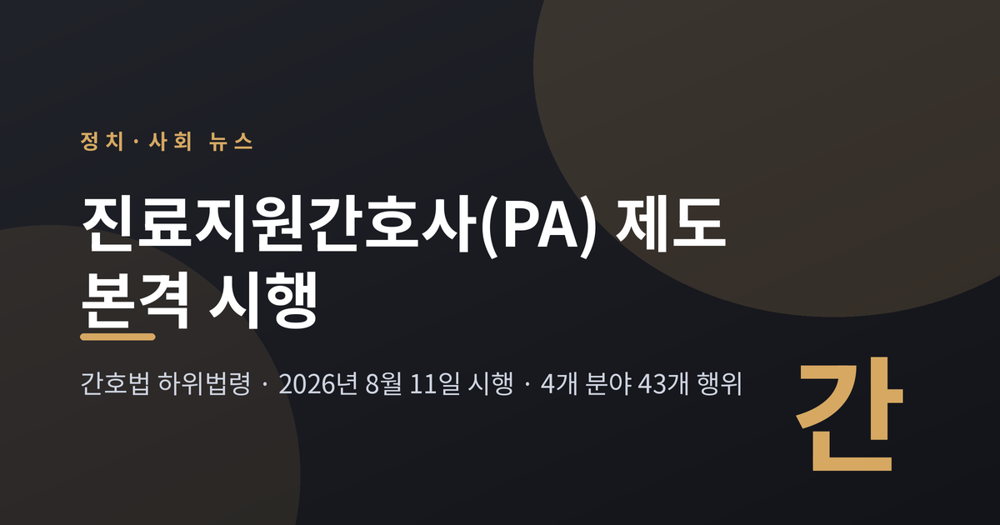
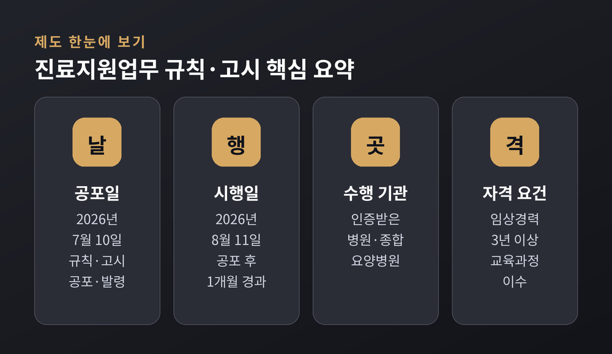
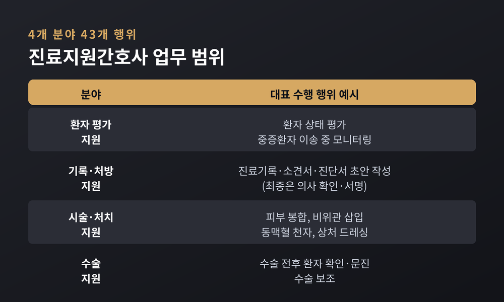
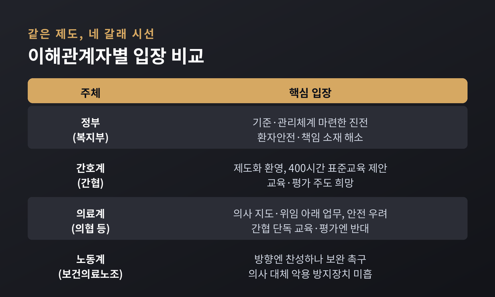
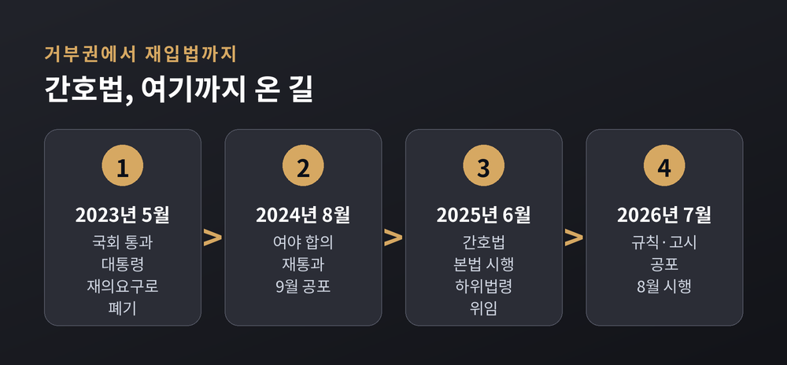
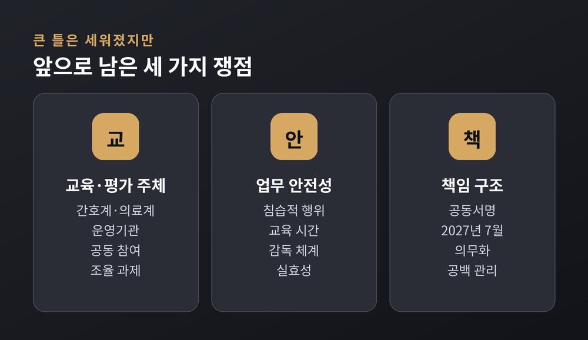

이번 글에서는 간호법의 하위법령인 진료지원업무 규칙·고시가 무엇을 바꾸는지 정리해 보겠습니다. 오랫동안 병원 안에서 관행으로만 존재하던 이른바 'PA간호사'가 처음으로 법과 제도 안으로 들어왔습니다. 무슨 내용인지, 왜 지금 논쟁이 되는지, 각 직역의 입장은 어떻게 갈리는지 차분히 짚어 드리겠습니다.

먼저 결론부터 요약하면 이렇습니다. 보건복지부는 2026년 7월 10일 진료지원업무의 규칙과 고시를 공포했고, 공포 한 달 뒤인 8월 11일경부터 시행됩니다. 진료지원간호사가 할 수 있는 일은 4개 분야 43개 행위로 정해졌습니다. 정부는 환자안전을 위한 진전이라 보지만, 의료계는 우려를, 노동계는 보완을 말합니다.
PA간호사는 오래된 이름입니다. 상급종합병원에서 의사 업무의 일부를 돕는 간호사를 현장에서 그렇게 불러 왔습니다.
문제는 이 일을 규율하는 법이 없었다는 점입니다. 자격도, 업무 범위도, 사고가 났을 때의 책임 소재도 모호했습니다.
예전에는 '있지만 없는 것처럼' 다뤄졌습니다. 이제는 규칙과 고시라는 문서 위에 올라섰습니다.
보건복지부는 2026년 7월 10일 「간호사의 진료지원업무 수행에 관한 규칙」과 「간호사의 진료지원업무 수행행위 목록 고시」 제정안을 공포·발령했습니다. 이 규칙은 공포 후 한 달이 지난 2026년 8월 11일경부터 시행됩니다. 의사와 간호사가 함께 서명하는 공동서명시스템 구축 의무만은 병원의 전산 준비 기간을 고려해 2027년 7월 1일로 미뤘습니다.
이 조치는 2025년 6월 시행된 간호법에서 비롯됐습니다. 간호법은 진료지원업무가 가능한 기관과 간호사의 범위, 자격 요건을 하위법령에 위임해 두었습니다. 본법만으로는 세부 기준이 비어 '반쪽짜리'라는 지적이 있었는데, 이번 규칙과 고시가 그 빈칸을 채운 셈입니다.

가장 관심이 쏠린 부분은 업무 범위입니다.
규칙은 진료지원업무를 네 갈래로 나눴습니다. 환자 상태 평가 지원, 기록·처방 지원, 시술·처치 지원, 수술 지원입니다. 여기에 속하는 구체적 행위 43개를 별도 고시로 못 박았습니다.
목록에는 무게가 다른 행위들이 함께 있습니다. 진료기록과 소견서·진단서의 초안 작성, 상처 드레싱처럼 비교적 익숙한 일이 있는가 하면, 피부 봉합, 비위관 삽입, 동맥혈 천자, 말초동맥관 삽입, 인공호흡기 설정처럼 침습적인 행위도 포함됐습니다.
다만 안전장치를 함께 뒀습니다. 진료기록이나 처방, 진단서는 간호사가 최종 확정하지 못합니다. 초안을 만든 뒤 반드시 의사의 확인과 서명을 거쳐야 합니다. 이를 위한 공동서명시스템을 병원이 갖추도록 한 것입니다.
수행할 수 있는 사람과 장소도 좁혀 놓았습니다. 진료지원업무는 의료기관 인증을 받은 병원·요양병원·종합병원에서만 가능합니다. 수행 주체는 전문간호사와 진료지원전담간호사로 나뉘며, 진료지원전담간호사가 되려면 임상경력 3년 이상과 보건복지부장관이 정한 교육과정 이수가 필요합니다.

배경에는 의료 인력 공백이 있습니다.
2024년 전공의들이 병원을 떠나면서 상급종합병원의 손이 크게 부족해졌습니다. 그 빈자리를 상당 부분 진료지원간호사가 메웠습니다.
숫자는 늘었지만 법은 그대로였습니다. 그래서 '무면허 의료행위'라는 말이 반복해서 따라붙었고, 사고가 나면 누가 책임지느냐는 물음이 늘 뒤에 남았습니다.
이번 제도화는 그 회색지대를 문서 위로 끌어올린 작업입니다. 동시에 "누가 어디까지 할 수 있는가"라는 예민한 경계를 정면으로 건드리는 일이기도 합니다. 진전과 갈등이 한 몸에 담겨 있는 셈입니다.
같은 제도를 두고 목소리가 나뉩니다. 어느 한쪽 손을 들어주기 전에, 네 갈래의 시선을 나란히 놓아 보겠습니다.
정부는 진전이라 봅니다. 보건복지부는 관행으로 흐르던 업무를 명확한 기준과 관리체계 아래 둘 수 있게 됐다고 설명합니다. 곽순헌 보건의료정책관은 "간호사의 진료지원업무를 체계적으로 관리할 법적 기반이 마련됐다"고 밝혔습니다.
간호계는 환영하며 주도권을 원합니다. 대한간호협회는 공통·분야별 교육과 현장실습을 더해 총 400시간의 표준 교육과정을 제안했고, 중환자·응급, 내과, 수술 등 11개 분야의 자격 기준안을 내놓았습니다. 교육과 평가 체계를 간호계가 이끌겠다는 입장입니다.
의료계는 신중하고 비판적입니다. 대한의사협회·대한병원협회·대한의학회는 7월 2일 공동성명에서, 교육·평가를 간호협회가 단독으로 맡아야 한다는 주장은 지나치다고 반박했습니다. 진료지원업무는 간호사의 독자 영역이 아니라 의사의 판단과 지도·위임 아래 이뤄지는 일이라는 것입니다. 위험한 행위가 목록에 담겼는데 교육이 충분히 담보되지 않으면 환자안전이 위태로울 수 있다는 우려도 함께 냈습니다.
노동계는 방향엔 찬성하되 허점을 짚습니다. 보건의료노조는 제도화 자체엔 동의하면서도, 전담간호사가 의사를 대체하는 수단으로 악용되지 않도록 할 핵심 안전장치가 규칙에 빠졌다고 지적했습니다. 현장 간호사들이 의사 업무를 떠안으며 의료사고 위험을 자주 느낀다는 목소리도 전했습니다.

간호법은 단숨에 만들어진 법이 아닙니다.
2023년 5월, 국회를 통과한 간호법 제정안에 대통령이 재의요구권을 행사하면서 법안은 한 차례 폐기됐습니다. 당시 의사협회를 포함한 여러 보건의료단체가 반대했습니다.
그러나 논의는 멈추지 않았습니다. 2024년 여야는 다시 협의에 나섰고, 그해 8월 국회 본회의에서 간호법이 합의로 통과됐습니다. 이후 9월 공포, 2025년 6월 시행으로 이어졌습니다.
그리고 2026년 7월, 마지막 퍼즐이던 하위법령이 채워졌습니다. 거부권에서 재입법, 그리고 세부 규칙까지. 3년에 걸친 긴 과정의 한 매듭입니다.

큰 틀은 세워졌지만, 마감은 아직입니다.
교육과 평가의 주체를 어디까지 간호계가 맡을지가 첫 번째 쟁점입니다. 운영기관에 간호사회와 의사회가 함께 들어간 만큼, 세부 조율에서 다시 부딪칠 여지가 있습니다.
업무 범위의 안전성도 계속 시험대에 오릅니다. 침습적 행위에 걸맞은 교육 시간과 감독 체계가 실제로 작동하는지가 관건입니다.
책임 구조의 완성도 남았습니다. 공동서명시스템은 2027년 7월에야 의무화됩니다. 그 사이의 공백을 어떻게 관리할지가 과제로 남습니다.
물론 한계는 있습니다. 이 제도만으로 의료 인력 부족이 해결되지는 않습니다. 진료지원간호사는 의사를 대체하는 존재가 아니라 협업하는 동료로 설계됐고, 그 원칙이 현장에서 지켜질 때 제도는 제자리를 찾을 것입니다.

정리하면 이렇습니다. 이번 하위법령은 회색지대에 놓여 있던 진료지원간호사를 처음으로 제도의 언어로 규정한 조치입니다. 방향은 앞으로 나아갔지만, 세부의 합의는 이제부터 시작입니다.
결국 남는 물음은 하나입니다. "환자의 안전과 의료진의 협업을 동시에 지킬 수 있는가." 그 답을 현장이 어떻게 채워 갈지, 차분히 지켜볼 필요가 있겠습니다.